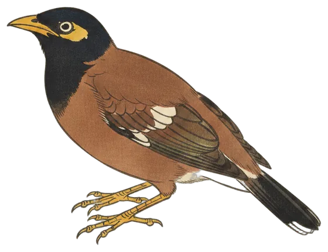

Station first
Common myna arrives on the station's list
A bird the station has never recorded before gave two calls this morning, one of 13 species heard across the 24 hours to 9:30 pm.

The Common Myna is new to these pages. The station, which has been listening for 68 days, recorded it for the first time today: two calls, the first at 8:21 am and the last at 8:24 am.
It is one of the most widespread birds around Canberra, and lives in the region year-round, yet the microphone had not picked it up until now. The common myna eats everything from grasshoppers and earthworms to fruit, nectar, roadkill and discarded human food.
The full day's list came to 13 species and 447 calls, well clear of the seven-day average of 330 calls. The busiest stretch was 5 am to 6 am, which produced 100 of them.
- Calls
- 2
- First heard
- 8:21 am
- Best call
- 91%
- Days heard
- 1 of 68